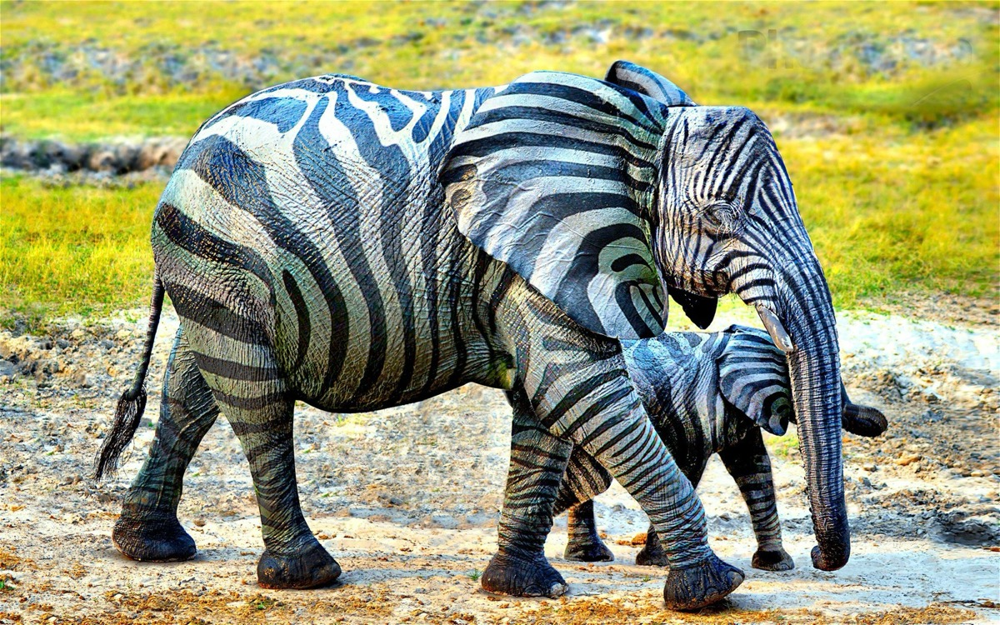

Mascații
Mama vrând puiul să-l distreze
Care tot timpul plângea
Reuși sa se mascheze
Plecând unde puiul își dorea
Și-așa au plecat la drum
Făr' ca nimeni să îl cheme
Unde credeți că-s acum?
În cireada unor zebre.
Puiul, cu puii de zebră
Se joacă, ridicându-i cu trompa
De nimic nu se mai teme
Uitând și de mama sa!
Elefantesa de-atunci
Apără zebrele toate
De nu poți să te atingi
Cu gănduri de răutate!
Vasile Groza